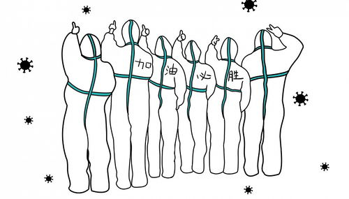
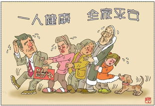
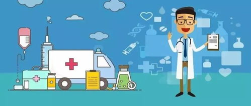

新型冠状病毒疫情相关知识普及
抗击疫情的一些有用知识：
1.选哪种口罩好？
今年流感，比去年起病的高峰大约滞后了半个月左右，但整体来讲是符合季节性变化的，没有什么特别的一些异常。 平时戴口罩、勤洗手、勤开窗通风都是防流感的好办法，但要注意，并不是所有的口罩都可以防流感。流感的传播途径，它是通过飞沫传播的，所以口罩起码要达到阻隔飞沫传播的功效，所以它的材质是有要求的。
另外还要注意一点，口罩不能戴太久，要记得更换。一个湿润的环境是细菌、微生物很好地培养基，咱们自己佩戴的时候因为会有汗、或者一些口腔内分泌物，因为呼吸有水蒸气，把它弄湿了以后大家就要即刻更换，大约4~6个小时更换一次是比较合理的。
2.哪些人容易感染新型冠状病毒？
人群普遍易感。新冠肺炎在免疫功能低下和免疫功能正常人群中均可发生，与接触病毒的量有一定的关系。对于免疫功能较差的人群，例如老年人、孕妇、存在肝肾功能异常或有慢性病人群，感染后病情更重。
3.新型冠状病毒的传播途径有哪些？
经呼吸道飞沫和接触传播是主要的传播途径。在相对封闭的环境中长时间暴露与高浓度气溶胶情况下存在气溶胶传播的可能。
4.什么是密切接触者？
（1）共同居住、学习、工作，或其他有密切接触的人员，如近距离工作或共用同一教室或在同一做房屋中生活；
（2）诊疗、护理、探视病例的医护人员、家属或其他有类似近距离接触的人员，如到如到密闭环境中探视病人或停留，同病逝的其他患者及其陪护人员；
（3）乘坐同一交通工具并由近距离接触人员，包括交通工具上照料护理人员、同行人员、或经调查评估后发现有可能近距离接触病例和无症状感染者的其他乘客和乘务员；
（4）现场调查人员调查后经评估认为符合其他与密切接触者接触的人员；
5.新冠肺炎患者有哪些临床表现?
新冠肺炎患者起病以发热为主要表现，可合并轻度干咳、乏力、呼吸不畅、腹泻等症状，流涕、咳痰等症状少见。部分患者起病症状轻微，可无发热，仅表现为头痛、心慌、胸闷、结膜炎、轻度四肢或腰背部肌肉酸痛。多数患者预后良好，部分患者在一周后出现呼吸困难，严重者病情发展迅速，甚至死亡。